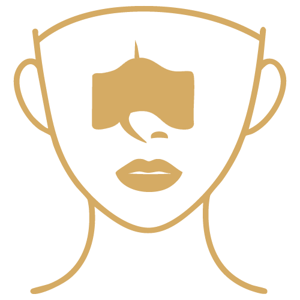
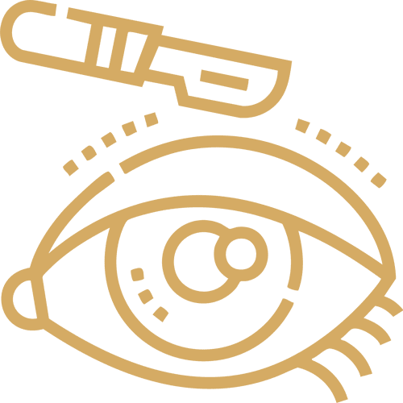
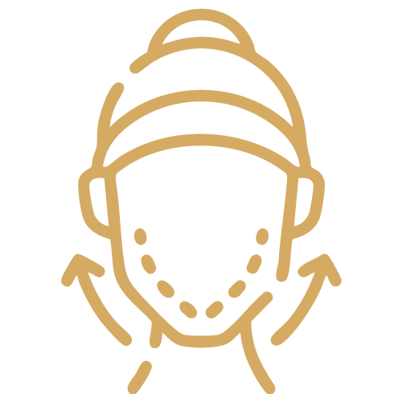
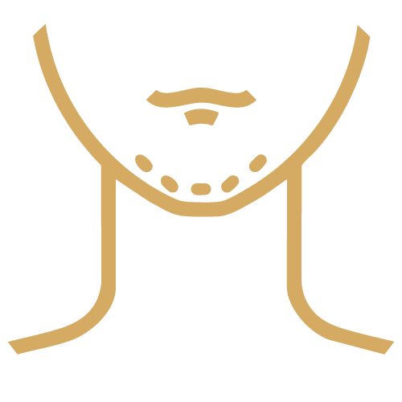

پنج طرح برای فهرست خدمات (/services/) و دو طرح برای صفحهی هر خدمت. رنگ، فونت و عکسها از خود سایتاند. متنها نمایشیاند و برچسب «نمایشی» دارند؛ متن واقعی را پزشک تأیید میکند. بر پایهی بررسی الگوهای سایتهای برتر پزشکی و جراحی زیبایی: فهرست قابلانتخاب خدمات، ساختار «چیست / برای چه کسی / مراحل / دوران نقاهت / پرسشها»، کارت تماس همیشه در دسترس، و فضای خالی زیاد.
با هر خدمت آشنا شوید و برای ارزیابی با مطب هماهنگ کنید. متن نمایشی

افزایش زیبایی چهره با طراحی متناسب بینی



رینوپلاستی
افزایش زیبایی چهره با طراحی متناسب بینی و توجه به عملکرد تنفس. متن نمایشی
جوانسازی پلکها
ظاهری جوانتر و طبیعی
اصلاح فرم چانه
برای هماهنگی تماس بگیرید
طراحی متناسب بینی
جوانسازی پلکها
ظاهر جوانتر
اصلاح فرم چانه
پاسخگویی در ساعات کاری مطب
افزایش زیبایی چهره با طراحی متناسب بینی
توضیح کوتاه و روشن دربارهی این خدمت و هدف آن. متن نمایشی
توضیح کلی دوران بهبودی؛ زمان دقیق را پزشک میگوید.
افزایش زیبایی چهره با طراحی متناسب بینی
توضیح کوتاه و روشن؛ هر پاراگراف یک ایده. متن نمایشی
ساعات کاری مطب
همهی تصاویر و رنگها از خود سایتاند. بعد از انتخاب شما، طرح برگزیده با متنهای قابلویرایش از پنل (همان سیستم فعلی خدمات) وارد سایت میشود.